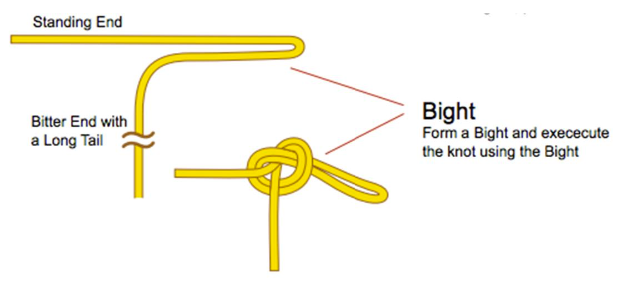
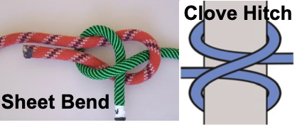
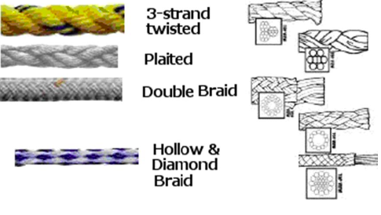
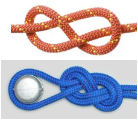
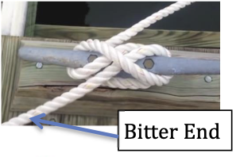
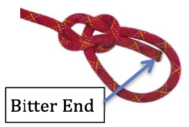
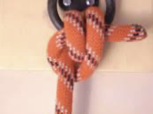
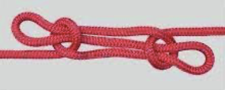
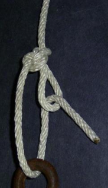
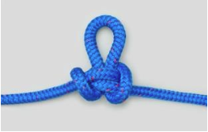

Sailing Manual
Written by Jane Dunn 1/29/2016
Updated by E. Eric Matus 6/22/2022
Sailing Manual
This manual has been developed for people sailing in Martin 16 sailboats. Martin 16s have a jib boom and forward-facing seating, as well as a joystick to control steering. Some of the usual sailing instructions have been modified to suit the boats and the needs of various sailors.
Each lesson can be accomplished in about 10 to 15 minutes. More experienced sailors will be able to complete several of the first lessons quickly. It is strongly suggested that all lessons be done in order. Each lesson has been developed to build on the sailing skills and vocabulary discussed in previous lessons.
We hope you enjoy your day on the water, and find these sailing practice skill lessons informative and worthwhile!
By Jane Dunn 1/28/2016
Updated by E. Eric Matus 6/22/2022
Converted to web book by M. Ryan Sullivan 7/16/2023
Email us if you spot any issues.
Part 1 - The Basics of Sail
Parts of a Boat
Sailing Terminology
Parts of A Sailboat Diagram
- Beam Widest part of the boat
- Block A device used to change a line’s direction (nautical term for pulley)
- Boom The horizontal spar that holds out the bottom (foot) of the mainsail
- Bow Front of the boat
- Cleat A metal or plastic device used to secure a line
- Cockpit The interior part of the boat where people usually sit
- Companion Seat Aft seat in the boat
- Joystick (aka Tiller) The lever in the cockpit used for steering
- Deck The top of the boat that covers the hull
- Helm Combination of Ridder, Tiller and lines that connects the two
- Hull The main body of the boat
- Keel The central underwater fin that prevents sideslip and often contains ballast
- Keel Box Fiberglass box part of the Hull from which the Keel extends into the water]
- Jib Boom or Boomkin small spar that the foot of the Jib attaches to
- Mast The vertical spar (pole) that supports the sails
- Rudder The vertical blade in the water at the stern that steers the boat
- Rudder Head Holds the Rudder and Tiller and has pintles that mount into gudgeons on the transom to form a Rudder hinge
- Seat Two Companion’s (Aft) and Helm Person’s (Forward) seats Stern Back of the boat
- Stern Back of the boat
- Tiller The horizontal rod attached to the top of the rudder and in the Martin 16 a Joy Stick mounted on the back of the Keel Box with lines connecting it to the Tiller on the Rudder
- Transom The flat portion on the Stern of the boat
Standing Rigging: Lines that support the mast
- Forestay The cable that supports the mast from the bow (also known as a Headstay) when the Martin 16 Jib Stay is not hoisted
- Shrouds Cables that support the mast from the sides of the boat
- Spreaders Horizontal spars that spread the shrouds away from the mast
Running Rigging: Lines that control and adjust sails
- Boom Vang A line that puts downward tension on the boom and Leech of the sail Cunningham A line controlling tension along a sail’s forward edge (luff)
- Halyard A line used to raise a sail
- Sheet A line used to adjust a sail against the force of the wind
- Outhaul A line that pulls the clew (aft corner) of a sail toward the end of the boom Sails:
- Mainsail The sail attached to the mast and the boom
- Jib The sail between the forestay and the mast (also called a headsail) Spinnaker A large balloon sail used when sailing downwind
Parts of The Sail
- Battens Stiffeners (usually wood or fiberglass) in the leech Clew Bottom back corner of the sail
- Foot Bottom edge of the sail
- Head Top of the sail
- Leech Back edge of the sail
- Luff Front edge of the sail
- Tack Front lower corner of the sail
- Telltales Pieces of yarn or ribbon that show wind direction (also known as trimtales)
Sailing Terms
- Trim Pull in a sheet
- Ease Let out a sheet
- Luffing Fluttering or flapping of the sail
- Windward Toward the wind
- Leeward Away from the wind
- Forward Toward the bow
- Aft Toward the stern
- Starboard The right side of the boat when looking forward Port The left side of the boat when looking forward
- Starboard tack Sailing so the wind comes from the starboard side of the boat
- Port tack Sailing so the wind comes from the port side of the boat
Sailing Maneuvers
- Tacking To change direction by turning the boat’s bow through the wind (also known as coming about)
- Jibe To change direction by turning the boat’s stern through the wind Head up To steer toward the wind direction
- Head down To steer away from the wind direction
Basic Right of Way Rules
Be courteous, and avoid possible collisions!
Port–Starboard rule
Port-tack boat must keep clear of the starboard tack boat
Windward-Leeward rule
Windward boat must keep clear of a leeward boat on the same tack
Clear astern - Clear ahead
Overtaking boat must keep clear of a boat clear ahead, whether it is a sailboat or a powerboat
The boat with the least maneuverability has right of way
Usually boats under power need to keep clear of boats under sail. However, large naval or commercial ships have limited maneuverability, so smaller recreational boats need to keep clear of them. Also, small boats should give a large boat in a narrow channel adequate room to maneuver.
Right and Left Drift
Get used to observing boats that present a concern for possible collision and sighting their position relative to your boat. Keep checking occasionally if their relative position for right or left drift. If another vessel is on a Constant Bearing with Decreasing Range (CBDR) then a potential collision exists. This can be avoided by simply changing your course or heading to pass astern of the other vessel.
Telegraphing Your Intentions to Pass (Port or Starboard)
When approaching a vessel, that is nearly dead ahead, it is important to keep the bow of your boat to one side of the other vessel’s bow. Avoid allowing your bow to wander to the right and left of the other vessel’s bow since this will confuse that vessel’s helms person or skipper as to your intentions. If the other vessels skipper is experienced then they will keep their bow pointed to one side of your bow also ‘telegraphing’ their intention to pass to one side of your bow. If you find a vessel approaching that keeps veering right and left of your bow it may indicate they are inexperienced or distracted and you should make a course change to avoid passing close to the other vessel.
By determining early the right of way situation for the boats closest to your boat and monitoring their course and drift you can prevent situations that require you to make any drastic course changes to avoid a collision. Telegraph your intentions early with other boats coming towards your bow, and monitor the drift of boats closest to you. Always cross astern of large vessels that are working, must stay in a channel, especially ferries, harbor patrol boats, and vessels towing or fishing. Early monitoring and action will lead to an uneventful sail. Do not assume that as a sailboat you automatically have right-a-way over power boats. Know your right-a-way rules but know that the most important rule is “Avoid a collision.”
Points of Sail
Dee Caffari "Points of Sail" deecaffari.com. 2009
Identifying Wind Direction
It is necessary to understand where the wind is coming from, in order to know which direction to head your boat, and how to trim the sails. These are some ways to determine wind direction:
Look at flags blowing in the wind.
Look at the telltales on the shrouds or the sails.
See which direction the wind vanes on nearby sailboats are pointing.
Notice the direction that the waves or ripples from wind gusts are moving on the water.
See that anchored boats face into the wind if the current is weak. Feel the wind on your face, and notice how your hair blows. Notice how other sailboats have their sails trimmed.
When the mainsail fully luffs, the wind blows from the mast to the end of the boom (toward the clew).
If you luff your sails and turn your boat until the boom is along the centerline of your boat, your bow will be pointing into the wind.
Practice
Determine the wind direction while at the dock.
Then sail out into the bay, and again try to determine the wind direction.
Remember
Windward means toward the wind. Leeward means away from the wind.

Sail on a Beam Reach
You are on a beam reach when the wind is blowing perpendicular to your boat (directly across the side), and your sails are halfway out.
Practice
Start sailing so that the wind blows perpendicular to the direction you are traveling.
Adjust the mainsail so it just starts to luff (flutter back and forth), and then trim in (pull in) slowly until the luffing stops. This gives you proper mainsail trim.
Adjust your jib so it just starts to luff, and then trim in slowly until the luffing stops. Then fine-tune with the telltales:
If, the inside telltale flutters up or down, trim in the sail gently until both telltales flow straight back.
If the outside telltale flutters up or down, let out (ease) the jib until both telltales fly straight back.
Steer a straight course, adjusting your sails as needed. If you need a short break from watching telltales, aim your sight over the bow of your boat to a spot onshore if possible, and head for that spot, checking the telltales periodically.
If the wind is too strong, you can take some pressure off the joystick and bring the boat more upright (reduce heel) by letting out (easing) the mainsail a small amount.
Beam Reach

Sail Close-Hauled Using Telltales
When sailing upwind, telltales help you determine how high you can point toward the wind, and still maintain your speed.
Practice
Start sailing on a beam reach.
Head up toward the wind as you trim in (pull in) the jib to a position halfway between the mast and the shroud. Watch your jib telltales as you head up.
Return the joystick to center when both the red and green jib telltales fly straight back. Trim in the mainsail so the boom is directly over the leeward stern corner of the boat. You are now sailing close-hauled. Keep the telltales flying straight back as you sail.
If the inside telltale flutters, then head down by moving the joystick slightly to leeward (away from the wind). Then center the joystick when both telltales fly straight back.
If the outside telltale flutters, head up by moving the joystick slightly to windward (toward the wind). Then center the joystick when both telltales fly straight back.
This heading will allow you to stay close to the wind and maintain good boat speed. If the wind is too strong, you can take some pressure off the joystick and flatten the boat on the water by letting out (easing) the mainsail a small amount.
Hint: Move the joystick away from the direction of the fluttering telltales.
Close Hauled

Sail on a Broad Reach
You are on a broad reach when you are headed about 100°–140° from the wind, and your sails are about three-quarters of the way out.
Practice
Start by sailing on a beam reach.
Head down (turn your boat away from the wind) while letting your mainsail out, until the wind comes over the windward stern corner of your boat.
Let out (ease) the mainsail until it just starts luffing, then gently trim it in until the luffing stops. Make sure the boom does not rub against the wire shroud. (The boom should always be at least 2 inches away from the shroud.)
Let out (ease) the jib until it just starts luffing, and then gently trim it in until the luffing stops. The jib telltales may not be effective when on a broad reach.
You are now sailing on a broad reach. Steer a straight course, keeping the wind over your windward stern corner and your sails full. Find a point on land to head for, if possible, to help you maintain a consistent heading.
Hint
If your jib switches sides, you have headed down too far, and you are no longer on a broad reach. Head up by pointing the joystick gently to windward (away from the mainsail), until the jib is on the same side as the main. Then center the joystick.
Broad Reach

Sail on a Run (Wing-On_Wing)
When sailing with the wind directly behind you, your sails catch the wind better if you have the jib on one side, and the mainsail on the other. This is called sailing downwind, or wing-on-wing.
Practice
Start by sailing on a beam reach.
Head down (turn your boat away from the wind), while you let out (ease) your mainsail, until you are on a broad reach. The boom should be about 2 inches away from the wire shroud. Let out (ease) the jib until it is perpendicular to the boat. The jib telltales will not be effective.
Gently move the joystick toward the boom, to turn the boat a bit more downwind. Return the joystick to center when the jib switches sides.
You are now sailing on a run. Steer a straight course, keeping the wind over your stern and your sails full. Find a point on land to head for, if possible, to help you maintain a consistent heading.
Hint
This requires very careful steering. If you head too high toward the wind, your jib will switch sides. If you steer too far downwind, your mainsail will switch sides in an “accidental jibe”. If you do jibe accidentally, gently move the joystick toward the boom to jibe back onto your original course.
Wing on Wing

Martin 16 Controls
Martin 16 sailors sit on a seat facing forward and all controls and lines are led to the cockpit to allow sailing without having to leave the seat. The rudder is controlled with a joystick. There is a second seat behind the command seat for a passenger or instructor. With the keel extended the boat cannot be tipped.
Once comfortably seated, the joystick tiller (to control the steering) and lines (to control the sails) are directly at hand making it possible to sail the boat independently without needing to change position. A second seat for an instructor or companion is located behind the sailor’s seat.
Optional power-assist equipment can be added to the boat to allow individuals with weak arms to sail the boat using a joystick similar to those found on power wheelchairs. And for those who cannot move their arms at all the sip ’n puff system allows them to sail the boat using their breath! Even people on respirators can sail the Martin 16 independently!
The Martin 16 is controlled by a deep, spade rudder which provides positive control under all wind and sea conditions, with minimum pressure required to the helm. The helmsperson uses a "joystick" to control the boat, and the movement of the joystick is transferred to the rudder via zero-stretch, high strength control lines guided by low-friction ball-bearing pulleys.
Below all the running rigging controls are illustrated, showing how all sail controls are led to the cockpit in easy reach of the sailor.

Practice
Start once on the dock and you’ve found your boat. The participant should get into the front seat. Once the participant is onboard do the following:
- Release all the cleated lines inside the cockpit. Do not release the Spinnaker Halyard on the right just outside the cockpit and do not release the spinnaker sheets at the left and right shoulders on the Martin’s decks.
- Unclip the Vang and Cunningham from the bail on the Main/Jib cleats on the back/top of the Keel Trunk.
- The Companion can begin to attach the Jib Halyard, tack, and clew, then standing back while the Participant hoists the jib. Ensure the Jib Halyard is fully hoisted with enough tension to cause the forestay to become slack.
- Next the Companion can retrieve the boom with the Participants help and attach the tack and clew.
- While the Companion is working with the Main, the Participant can attach the Vang to the boom leaving it loose and uncleated.
- Next the Companion attaches the Main Halyard and guides the luff bolt rope into the mast’s sail slot while the Participant hoists the Main Halyard until the Mainsail is tugging on the boom.
- The Companion lifts the Boom and attaches it to the Gooseneck on the Mast while the Participant finishes hoisting the Main Halyard until there is some tension on the Mainsail’s Luff.
- With the Mainsail up the Participant can attach the Vang to the Boom and cleat off the Vang line then hand the Cunningham Hook to the Companion who attaches it to the Mainsail Cunningham Cringle about 8 inches above the Tack and the Participant then cleats the Cunningham line.
- At this point the Participant can set the Outhaul for the expected wind conditions and cleat it, check to see that the Jib Tension is cleated off and the Main and Jib Sheets are not cleated.
- The Companion can now untie and stow the Stern and Bow lines, climb aboard while Dock Assistant holds the Martin’s shroud, and the Participant checks that the tiller is free and clear by moving left and right.
- With the tiller free, the Dock Assistant walks the Martin to the end of the dock and pushes the boat forward so the Participant can steer.
Changing Your Heading
When heading up in a Martin, it is best to pull in the jib first so it doesn’t flap around. Then pull in the mainsail once the wind pressure is off it. When heading down, let the mainsail out first, to take the pressure off the sail, which helps with steering and heeling (tipping). Then you can adjust the jib.
Practice
Start by sailing on a beam reach. To head up to close-hauled:
Check around and behind you for other boats. Pull the jib into its close hauled setting as you move the joystick to windward. Adjust your heading using the jib telltales.
Pull in the mainsail until the boom is over the stern’s aft-leeward corner. To head down to a broad reach: Check for other boats, then let out the mainsail as you move the joystick to leeward. Center the joystick onto your new heading. Make sure the boom does not rub on the shrouds.
Adjust the jib.
Hint
Some sailors trim in or ease both sails at the same time by holding both lines (sheets) in one hand. For sailors using a PAU the jib and mail sheets trim the same amount allowing the PAU’s spools to trim both sails simultaneously.
Tacking (Coming About)
When you tack, you turn the boat into the wind, through the 90° “No-Go Zone” until your sails cross to the other side of the boat.
Practice
Start sailing on a close-hauled heading, with your sails trimmed to the correct position, and your telltales flying straight back.
- Say “READY TO TACK?” to let your companion know you plan to change direction.
- Check your surroundings for other boats, or have your companion check for you.
- Say “TACKING”, and smoothly move the joystick all the way to windward. You do not have to adjust the sails. The sails will switch to the other side of the boat as your direction changes.
- Center the joystick when your sails start to fill.
- Check your telltales and adjust your heading as needed.
- “READY ABOUT” and “HARD-TO-LEE” are sometimes used instead of “READY TO TACK” and “TACKING”.

Jibing
You jibe when you turn your boat **away from ** the wind, and the boom crosses quickly to the other side of the boat.
Practice
Start sailing on a broad reach, with your sails perpendicular to the boat. Make sure the boom is at least 2 inches away from the wire shroud.
- Say “READY TO JIBE” to let your companion know you what you are planning.
- Check your surroundings for other boats.
- Say “JIBING”, and start pulling in the mainsheet.
As soon as the boom crosses to the other side of the boat, let the mainsheet slide out rapidly until the boom is again about 2 inches off the shroud, and immediately center the joystick. Do not let the boom hit the shroud. The jib will switch sides without you tending the jib sheet.
Hints
Pulling in the mainsheet and then letting it out lets you control the mainsail as it crosses the boat. Your companion can control the mainsheet from their position if needed.
“PREPARE TO JIBE” and “JIBE-HO” are sometimes used instead of “READY TO JIBE” and “JIBING”.
Safety Position
The safety position allows you to take a brief, controlled rest from sailing. Practice:
Start out sailing on a close reach.
Ease the jib sheet and mainsheet until both sails are fully luffing.
Keep your boat on the close reach heading. Your boat will glide to a stop. You are now in the safety position.
To resume sailing, just trim in both sails, and the boat will start moving.
Sailing a Straight Course
Every time you move the joystick, it slows the boat. Sailing a steady, straight course is easier, less tiring, and faster.
Practice
Start sailing on a heading of your choice (pick an object on shore in front of your bow). Once you’ve picked a course, trim your sails to the wind.
Concentrate on trying to move the joystick as little as possible, while still maintaining your course. Focus on the feel of the boat as it responds to any small corrections that you make.
If a gust of wind makes the boat head up toward the wind, push the joystick slightly toward the boom to resist that movement. Ease up the pressure on the joystick as you feel the gust end.
After a few minutes, change your heading and sail trim. Notice if there is any difference in the movement needed on the joystick to maintain this new heading. Feel how the boat glides through the water.
Hint
Movement with the joystick should be gentle and minimal. You are just trying to counteract the pressure of wind gusts and waves on the boat. Try not to over-steer.
Changing Sail Trim While Looking Ahead
The mainsheet and jib sheet are positioned directly in front of the sailor, so there is no need to look at the lines while trimming in or easing out. It is more important to look ahead to see where you are going, while glancing briefly at the sails to see the effect of the trimming.
Practice
Start sailing on a beam reach.
Take one last look at where the jib sheet and mainsheet are located. Then without looking, try to first put your hand on the jib sheet, and then the mainsheet. Repeat this, until you are comfortable finding each line without looking.
Check your surroundings for other boats.
Head up to close-hauled, while pulling in the jib sheet and the mainsheet, without looking at the lines. Keep your eyes focused up and ahead to where you are going, occasionally glancing at the sails. This can be done with the joystick pushing fore or aft.
After a few minutes, head down to a broad reach, easing the main sheet and then the jib sheet. Keep your eyes focused ahead to where you are going.
Repeat this procedure until it feels natural to handle the sheets without looking at your hands.

Getting Out of Irons
You are “in irons” when your boat is stopped, you are headed directly into the wind with your sails luffing, and you are not able to steer normally.
Practice
Start out “in irons.”
Push and hold the joystick completely to one side. Be patient. The boat will drift backward and slowly turn.
When the wind comes across the side of the boat, pull in both sheets push the joystick toward the boom, and resume sailing.

Slowing or Stopping
Usually we want our boat to sail quickly, but sometimes it is useful to slow the boat when trying to avoid an obstacle.
Practice Upwind
How to Slow Down When Sailing Upwind:
Start sailing close-hauled. Let out one or both sails so that they luff, and your boat will slow down.
Practice Downwind
How To Slow Down When Sailing Downwind: Start sailing on a broad reach. Head your boat up toward the wind, keeping your sails out so they luff, and your boat will slow down.
Practice Downwind When Cannot Alter Course
How To Slow Down When Sailing Downwind If You Cannot Alter Course: Start sailing on a broad reach. Pull in both sails so they are over the centerline of your boat (pulled in tight). The boat will slow because your sails will be over-trimmed, and not catching the wind properly.
Practice Stopping
How to Stop the Boat:
Start sailing on any heading. Then head to a close reach and luff your sails completely in the safety position. IMPORTANT: In order to slow the boat when making a downwind or crosswind docking, it is usually necessary to drop the mainsail, and fully luff the jib. The companion sailor may also need to drag a paddle in the water to slow or stop the boat.
Man Overboard (MOB) Drill
Rescuing a potential “Man Overboard” is an essential skill for any sailor to know. You can practice retrieving a lifejacket or buoy, or sail close to an anchored mark and pretend it is your person in the water.
Practice
Start out sailing on any heading.
Throw the buoy overboard
Immediately say, “MAN OVERBOARD”.
Change your heading to a beam reach. Keep your eyes on your “MOB” buoy at all times.
After 5-10 seconds, tack and head again onto a beam or broad reach so you cross your “path”.
Head up, so you approach the “MOB” buoy on a close reach, and luff your sails so that your boat glides to a stop in the Safety Position.
Keep the “MOB” buoy to windward. Retrieve the “MOB.”
Hint
This is called the Reach-Tack-Reach or Figure 8, which describes the procedure and pattern used.
In a real “Man Overboard” situation, you should call “MAN OVERBOARD” loudly as soon as you saw see the person in the water, and return as described. Always approach the MOB slowly! If you have difficulty reaching the person, or getting them in your boat, radio for help immediately and try to flag down any other passing boat for assistance.
Man Overboard Drill (Using Quickstop)
Man Overboard (MOB) is sometimes referred to as Crew Overboard (COB), and also sometimes as Person In Water (PIW). However, Man Overboard (MOB) is the term that is recognized universally among sailors.2
Man Overboard (MOB) Drill “Adapted”
Rescuing a potential “Man Overboard” is an essential skill for any sailor to know. Most “Man Overboard” drills involve sailing away from the MOB briefly, then returning to where the person fell overboard. This drill is adapted for sailors who are not confident in their ability to return to the MOB. The goal is to stop the boat as soon as possible, so a person overboard can hopefully swim to the boat. You can practice the drill by retrieving a lifejacket or buoy, or sail close to an anchored mark and pretend it is your person in the water.
Practice
Start out sailing on any heading.
Throw the buoy overboard.
Immediately say, “MAN OVERBOARD”. Keep your eyes on your MOB at all times.
Immediately release both the mainsheet and the jib sheet, and head up directly into the wind. Then continue turning until you are on a close reach heading in Safety Position with your sails luffing completely. You should glide to a stop.
Drift toward the MOB. Retrieve the buoy if possible.
In a real “Man overboard” situation, you should call “MAN OVERBOARD” loudly as soon as you see the person in the water, promptly release both the mainsheet and the jib sheet, and immediately start turning. If the person cannot reach the boat or you are unable to get them in your boat, radio for help immediately, and try to flag down any other passing boat for assistance.
Sailing Using Clock Positions
As sailors gain experience, they can have their companion use “clock positions” to give directions (see illustration the next page). This lets sailors trim sails and steer more accurately, and also helps them understand the movement of other boat traffic.
Practice
Imagine that your boat is in the center of an analog clock face, with the 12 o’clock position straight ahead of the bow, and the 6 o’clock position directly behind your stern. The 3 o’clock position is directly to your right (starboard), and the 9 o’clock position is to your left (port).
Start sailing close-hauled on port tack, and have your companion check your surroundings for other boats. When your companion asks you to, change your heading so your boat points toward the 3 o’clock position.
Sail on this heading for about 15 seconds. After checking your surroundings, have your companion give a command to change to a 10 o’clock heading. (Remember, the 12 o’clock position is always the direction your boat is currently heading before you begin your maneuver).
Continue practicing steering and changing direction as your companion gives a variety of clock directions, until you become familiar with how much turning and sail trim is required for each change.
You can also practice having your companion tell you the location of other boat traffic using clock positions. For example, your companion can say, “There is a sailboat approaching us at 4 o’clock, about 50 yards away.” This allows you to orient yourself to traffic, and start preparing for any maneuvers that you may need to take to stay clear.
Your companion may also give directions by saying, “Our next racing mark is at 2 o’clock.”
If the companion gives clock position directions, and the jib sheets and mainsheet have been marked with whipping twine at the close-hauled, beam reach, and broad reach positions, then an experienced sailor with visual impairments will be able to sail with very little additional guidance.
You may find yourself with experienced sailors ‘old salts’ that will use a combination of degrees off the Bow, Stern, or Beam, and terms such as forward quarter (roughly 45 degrees off the bow), Broad on the Beam (90 degrees from the Bow), or aft quarter (roughly 45 degrees ahead of the stern). As you continue to gain experience these directions will begin make sense.

Part 2 - The Basics of Seamanship
Preparation
Dressing for Hot or Cold
The essentials for what to wear sailing are most likely clothes you already have lying around at home, with a few important extras that you might want to consider making sailing a really enjoyable experience.
Practice
We’ll start with the miserable sailing gear and get to the fun stuff at the end! Although you don’t want to consider that it might rain on your sailing adventure, you’ll be even more upset if it comes and you aren’t prepared.
Sailing only really happens when it’s windy, and when it’s windy you get cold, and when it’s wet and windy you can get REALLY cold. Not great on a sailboat that doesn’t have heating!
You want a really decent raincoat when you’re sailing, so that if the worst does happen you can still enjoy it.
Get a waterproof jacket that’s also wind breaker. Even when it isn’t raining you can still get really cold when you’re out sailing, and a wind breaker jacket can make all the difference. As someone who used to sniff at ‘wind proof’ gear, Experience has made me a convert, and I don’t sail with anything less.
Make sure it also has a hood. You will be so thankful for that, especially if there is spray coming over the boat. No one wants cold seawater running down their back on a rainy day!
If you’re sailing in the height of summer, in occasional spray or rain, then waterproof trousers might be a little overkill. Still grabbing a cheap pair of waterproof trousers is recommended, just in case. Sailing is so much more comfortable when you have the right clothes for it.
The best way to deal with the changing weather while you’re sailing is to be prepared with lots of layers of sailing clothes. It can be bathing suit weather one minute and freezing cold the next.
Always bring a t-shirt, a long-sleeved top (preferably a thermal vest), a fleece top and then your raincoat that’s windproof as your final layer. The fleece top is the perfect sort of layer for sailing as it’s light and breathable, but will also keep you super warm.
Basic Knots
In order to understand an explanation on how to tie a knot some basic knot vocabulary is needed:
Line anatomy – Line typically has two ends the ‘Standing Part’ (or end) which is where the line is attached to a load (e.g., a boat) and the ‘Bitter End’ the free end that is not attached to a load. A ‘bight’ is formed when a line’s “tail” is doubled over.

A ‘Bend’ generally refers to a knot used to tie two lines together, while a ‘hitch’ generally refers to tying a line to an object or to itself. However like English for every rule there’re lots of exceptions.

Typical line types seen in boating are:
- 3-Strand used for dock lines and tow lines. It’s the easiest to splice.
- Double Braid used for running rigging
- Plaited line is used for anchor rode.
- Hollow Braid is used with polypropylene life lines attached to Rescue Rings for throwing to persons in the water. Polypropylene will float making it easier to see in the water.

Some Basic Knots
-
Figure Eight – Sometimes referred to as a stopper knot, it makes a knot that won’t slip out. Tied with a bight it also forms a secure, non-slip loop at the end of a rope. It’s a common knot used by mountain climbers, but comes in handy for securing to a mooring.
animatedknots.com Figure 8 Knot

-
Square Knot - Also called a reef knot, it’s an ancient knot from old school mariners. It’s a simple concept for securing a rope or line around an object. It can also be used to join two ropes together. Put a bight in the second half of the square knot and you have a slipped reef knot.
-
Cleat Hitch - Also referred to as a halyard knot. If you’re working with a cleat, use a cleat hitch. It’s a quick knot for securing your vessel/halyards, and it comes undone with ease. Easy on & off.

-
Bowline - A reliable choice that creates a fixed loop at the end of a line. It’s a knot that won’t jam and can be untied even under extreme tension. As long as it’s under constant load the bowline won’t slip, but under an intermittent load it can fail if the ‘bitter end’ is too short.
animatedknots.com bowline knot

-
Anchor Hitch - Also called an anchor bend knot. If you don’t use a chain and need to keep your anchor tethered to the anchor rode, this is the ideal choice. Once you’ve mastered it, it’s a quick go-to choice.
animatedknots.com anchor hitch

-
Clove Hitch - A quick temporary knot for tying moving objects to fixed ones or to secure fenders. Be careful, this knot can come undone if both objects aren’t stable. A quick solution knot, made more permanent when finished with three half hitches.
-
Sheepshank - A classic boating knot used to shorten a length of rope or take up slack. It’s not a stable knot and will come undone under too much, or too little, load but it’s a very handy for organizing and setting several lines you’re working with.

-
Trucker’s Hitch - One of the most versatile knots there is, not just for boating but in many outdoor activities. Don’t let the video intimidate you, it’s quick and easy. It’s a great knot for securing equipment into position and it utilizes a quick release to make unloading/changing out items efficient and simple. 1(a) Or some sailors have gone to the Alpine Butterfly Loop used the same way but much easier to untie after being under load.
animatedknots.com trucker's hitch quick release

-
Alpine Butterfly Knot - The butterfly loop, also known as lineman's loop, butterfly knot, alpine butterfly knot, Swiss loop and lineman's rider, is a knot used to form a fixed loop in the middle of a rope. One advantage is it unties easily after a load than a slip knot when used in a truckers hitch.
animatedknots.com alpine butterfly loop knot

Beyond Sailing the Boat
Adjusting and Depowering Sails
Depowering a sailboat generally starts with setting the outhaul tightly or putting in a snug “Flattening Reef” to flatten the bottom half of the Mainsail. Followed by setting the Jib sheet cars aft to flatten the bottom half of the Jib. This reduces the draft on both sails and opens the slot between Jib and Main. The Main can be further depowered by easing the vang to allow the top half of the main to twist off and spill excess wind.
Practice
On the Martin 16 the Outhaul can be tightened to flatten the lower half of the Main and the vang loosened to allow the Main to twist and spill excess wind in the top of the sail. The Jib Halyard can be set tighter to pull the Mast bending it forward further flattening the Main but not so tight the aft end of the Jib Boom drags on the deck.
The Main Halyard should be set tight enough to set a vertical wrinkle in the Main’s Luff which will relax some once underway and can be adjusted with the Cunningham.
Once underway in a breeze it’s important not to over sheet the Jib and in a beat to trim the Main so the back half of the second batten above the boom is kept parallel to the boat’s centerline. Some air will be spilled out of the top of the Main which reduces heel while still maintaining hull speed on a beat or close reach.
Over sheeting will hook the lower Main Sail battens to windward slowing the boat and will close off the slot between Jib and Main reducing the power down low on the main. Excessive heel will generate more leeway affecting course over the ground on a beat. So let the sails breathe by not over sheeting. Use the telltales to point as high as possible with proper trim, allowing the inner telltales to lift and the Main’s Leech telltales to ‘flutter’ while streaming.
Remember the Martin 16 was developed to sail on Canadian waters where higher winds are frequent so the boat sails well when heeled over up to 29 degrees, and the Martin 16 was designed to be able to sail heeled up to 30 degrees and not swamp from heeling. So relax, don’t over sheet, and enjoy windy days on the water!
Line Handling
The Martin 16 is designed to ‘gang sheet’ the sails (trimming both sails by pulling both sheets in the same hand together). This allows the Power Adapter Unit to use one motor and two spools to control the Jib and Main sheets at the same time.
All lines are led to the cockpit in easy reach from the front seat. The heavy keel and smaller sail plan means the most common error in sheeting is having the sheets in too tight, slowing the boat. It is recommended that you mark the deck half way between the mast and the gunnel and set the Jib at that point to sail upwind. If others are sailing as fast but higher than you it is probably that you are not letting the inner jib telltales to lift, especially on puffs. In winds above 15 knots you may find the Martin moves quickly upwind with the inner jib telltales pointing nearly straight up!
From a broad reach to a beat, check your jib luff and main leech telltales frequently to ensure they are flowing. If any of the outside jib or main’s leech telltales are drooping or flowing forward then your sails are stalled and you need to let sails out or possibly head up to reestablish flow.
Reefing
On most keelboats the mainsail can be made smaller by ‘reefing.’ This will reduce the sail area to depower the rig. On the Martin 16 reefing is unavailable, however the architect made the sail area of the Martin to withstand winds well above 20 knots. So, if the conditions seem to be exceeding the Martin 16’s ability, it is time to return to the dock or lower the mainsail and request a tow, albeit Challenged Sailors will always determine the conditions before allowing their boats to go out and if a small craft advisory (25 to 33 knots) are out of expected to be out during the sail, they will cancel sailing. In some cases, with participants or volunteers with less experience sailing may be curtailed when small craft exercise caution (winds of 15 to 19 knots) is announced.
If you are using a boat that can be reefed the rule of thumb is if you are considering weather to reef, then you should reef. This is especially true at the dock since reefing at the dock is safer than underway. Also remember that the mainsail in higher winds should have a snug foot wo ensure the reef also has a snug foot. Setting too much draft is counter to the objective of reefing which is to reduce sail area and while flattening the mainsail. Jibs on smaller boats can rarely be reefed unless they are on a roller furler and may develop too much draft when partially furled. Many clubs insist if you have too much wind while docking then drop the main and sail in on the jib.
For small boats without reef points on the main a method called a “Fisherman’s Reef” can be used. A Fisherman’s Reef involves easing the main until the top and leading edge of the sail begins to luff and while the leech is still catching wind. This takes some practice and skill but can be very helpful in reducing heel and preventing the boat from turning into the wind uncontrollably in higher winds and gusty conditions. As described by Herb Benavent on the web site Rigging Doctor.com: A Fisherman's Reef is when you ease the mainsheet and sheet in the jib. This will create a bubble in the main that will take away the mains power. This is a very temporary fix that can help to depower the main during a blow. riggingdoctor.com alternatives to reefing
Stowing Sails
On today’s sailboats the sailor is handling a wide variety of sail materials from Dacron polyester with coatings to reduce porosity improving performance to Genoas made of a mylar substrate supporting carbon fibers run along computer generated stress lines. All of these sail types are best preserved by stowing them away from the Sun’s UV light, keeping them dry, and covered to avoid collecting dust.
One thing that sailors can do to maximize the life and performance of these sails is never to intentionally crease them. DO NOT FOLD YOUR SAILS! Sails will perform best and last the longest if they are rolled and not folded.
Practice
When putting the Martin 16 sails away:
- Pull the head of the jib or main down to foot of the sail avoiding creasing the middle of the sail.
- Roll the sails loosely from its middle to the foot, use a tube along the center of the Mainsail and roll the sail being careful to keep the tube parallel to the battens. (Why not roll from the foot to the head? You can, the difference is the convenience of rigging the boat the next. When the sails are rolled from the middle then the head, tack, and clew can be attached without unrolling the sail. Once the halyard, tack and clew are attached and the boom mounted on the gooseneck, the sail can then be hoisted to unfurl it.)
- Once both Main and Jib are rolled then put them together and slide them into the sailbag with the same number. All hulls, sails, and sailbags are numbered.
When you stow sails, they should not be set against or on anything that can corrode or rust as this can cause serious damage to a sail. NEVER DRAG A SAIL ACROSS CONCRETE since this can damage the sail and any coatings applied. Dacron sails made more porous allows wind to go through the sail material rather to being deflected by the sail. Mylar sails are also sensitive to chafe causing damage to the high strength, low stretch fibers glued to the surface of the Mylar substrate.
Stowed sails should be covered and protected from dust, chafe, and UV light.
You will find that even on larger boats when sails are stowed, more and more they are being rolled and placed in long zippered sail bags which are passed below and placed in a bunk or on the floor to allow them to lay out with no folds. The only sails that are stowed in a bag in a wadded condition are spinnakers due to their large size and material that does not lend itself to rolling.
Environment
Weather
Excerpt from:
5 Things to Consider Regarding Weather
BY: ASA LEARN TO SAIL, SAILBOATS, WEATHER
At the core of all we do as sailors is one thing – weather. It’s is our engine, our bliss or our most frightening adversary. Let’s start with the basic ideas surrounding weather. Here’s a little list of things to think about as it pertains to weather.
Check the Weather
The first thing to always remember is to simply check the marine weather forecast before leaving the dock. Of course, this is obvious, but so many sailors look out the window, see the sun, raise the main and off they go. The VHF has a dedicated channel that continually plays the weather forecast, and you can find National Oceanic and Atmospheric Administration (NOAA) local predictions for your area on the Web.
Watch the Waves
The behavior of the waves will tell a sailor quite a bit. Not all of us have anemometers but we all can keep our eyes on what’s happening with wave action and understand how much wind is present. Knowing the speed of the wind is important in determining the proper sail trim. Here’s what to look for:
5-knots of wind creates small wavelets in the water.
10-knots of wind scattered whitecaps appear.
15-knots the wind forms significant waves – many of them with breaking tops.
20-knots the wind begins to kick up spray and life on the water can get a bit more intense. And, don’t forget another source for waves, Power Boat Wakes, Be Aware and Take on Wakes at a 45 to 60 degree Angle!
Dress for Success
Always keep or bring clothing that accommodates a change in weather. Dress in layers, it’s easy to look outside, in El Cajon, see a burning sun and forget that the Marine Layer can have San Diego Bay socked in with clouds. Being underdressed can compromise the mission. Have the right clothes and keep them on hand so your day on the water is comfortable!
Offshore and Onshore Winds
A sea breeze or onshore breeze is any wind that blows from a large body of water toward or onto a landmass; it develops due to differences in air pressure created by the differing heat capacities of water and dry land. As such, sea breezes are more localized than prevailing winds. Because land heats up much faster than water under solar radiation, a sea breeze is a common occurrence along coasts after sunrise. By contrast, a land breeze or offshore breeze is the reverse effect: dry land also cools more quickly than water and, after sunset, a sea breeze dissipates and the wind instead flows from the land towards the sea. Sea breezes and land breezes are both important factors in coastal regions' prevailing winds.

Tides and Currents
In San Diego the Tides occur in a semi-diurnal cycle (twice a day) occasionally causing ‘King Tide’ currents up to 3 knots to flow in and out of San Diego Bay. Offshore the California Current transits from north to south at roughly .68 mph with diurnal fluctuations due to the tides. In addition there is a California Inshore Counter Current that moves north. These currents are responsible over centuries for the formation of the Silver Strand enclosing San Diego Harbor with sediments primarily from the Tijuana River.
Due to a strong north to south average wind circulating along the coast of California combined with the Earth’s Coriolis affect causes an upwelling current that brings nutrient rich water from the deep ocean to the surface along the California Coast. This is why the Gray Whales follow the Coastline to their breeding grounds along the Baja Peninsula rather than take the shorter direct route from their feeding grounds in Alaska.
The California Current and prevailing winds from the North contribute to a prolific yacht delivery business on the West Coast. Yacht owners enjoying sailing south downwind and down current but prefer to hire Captains to return their yachts north to their homeports.

Aids to Navigation
Refer to: United States Coast Guard: Waterways Management Branch
Charts
Navigation Charts are something every sailor ought to be familiar with. If you own your own keelboat and plan to sail outside of your local sailing area, or want to know more about the area that you currently sail in then a local chart is essential. A Chart Book can be purchased that covers the local area and has the charts bound for convenient use. There are many symbols and abbreviations on a chart and getting familiar with some of them is important. The comprehensive reference is called Chart One and can be found at this link online.
However charts will have applicable symbols and abbreviations printed on the chart for the area the chart covers. NOAA now offers custom printed charts with an application produced by ESRI.
CSSD sails in an area confined enough and with adequate visibility that a chart is not required.

Safety
- Cold and Heat Effects
- Electrical
- Grounding
- Anchoring
- Equipment
- First Aid
- Signaling Help
- VHP Basic Operation
Cold andHeat Effects
An excerpt from an article in Sailing World
Sailing, Body Heat Regulation - Spinal Cord Injury
by Lynn Fitzpatrick on 11 Oct 2007
A normal, healthy human is able to maintain a constant body temperature of approximately 98.6F despite the temperature of the environment.
As we saw in this week’s Chicago Marathon, even an elite athlete’s body can overheat to the point of no return. Barely functioning body heat regulation for a sailor with a spinal cord injury is a
consequence that many able-bodied people don’t think about.
Most people with complete spinal cord injuries do not sweat below the level of the injury. This means that they need to monitor and control their environmental conditions.
If you remember your science class on cold blooded animals, you’ll remember that these animals have an inside body temperature that is controlled by the outside temperature of the environment.
Blood vessels do not dilate and contract appropriately to enable the person with a spinal cord injury to cool down or conserve heat in the same manner of the rest of us. The nerves that used to allow messages to fire back and forth telling blood vessels to dilate or constrict, are damaged and interrupted.
A comfortable range for many of our sailors with spinal cord injuries is 70-80° Fahrenheit.(21-27 centigrade.)
Once the outside temperature rises above 90° Fahrenheit (32 degrees centigrade), especially when the humidity is high, the body temperature will begin to rise and they will develop elevated body temperatures. Loss of energy and general malaise are symptoms that if left untreated may lead to heat stroke. Likewise, in cold conditions, they have a tendency to become hypothermic.
Many of our sailors with spinal cord injuries know their 'safe window' in terms of their exposure at different temperatures and humidity levels and team mates and coaches have to pay close attention to symptoms and comfort levels.
As this week’s US Olympic and Paralympic Sailing Trials go on, the physical and psychological demands of a long regatta will affect everyone differently.
All of us must appreciate the added demands on our sailors with spinal cord and other injuries as they race for the opportunity to represent their countries US in Qingdao, China next year where the hot Qingdao Tiger roars through the end of August and then it starts to cool down.
Electrical
An excerpt from a BoatUS article
According to the U.S. Coast Guard, should your boat come in contact with a power line, don't jump into the water. The electrical charge may pass through your boat and electrify the surrounding water. The safest approach is to stay in the boat and avoid touching anything metal. Leave the boat only after it has moved away from the line.
It's not just on the water where power lines can be dangerous. BoatUS claim files show that other boats have hit power lines while at launch ramps. A few years ago a Seaworthy editor was pulling his 22-foot sailboat out of a boat ramp at a small lake in Washington state after a sail with his family. He brought the boat to the staging area to lower the mast and prep the boat for the road when he was startled to hear what sounded like angry bees near the top of his mast. The sound it turned out was not from angry bees, but an angry high-voltage line that was not far from the top of the boat's aluminum mast. The boat was quickly moved away from the power line and the mast lowered. If anyone had been touching the mast and the electricity jumped from the line, they could have been electrocuted. The small-boat ramp was not designed with sailboats in mind; a boat with even a slightly taller mast could have created a disaster.
Look up and carefully scan the area for power lines before raising your mast — and don't forget to check again as you bring the boat out of the water. Older launch ramps are more likely to have low power lines that can snag an unwary sailor.
Apply the same rules used at home for internal electrical systems on boats. Turn off the circuit if you plan on working on an electrical circuit.
For boats large enough to “Bond” the mast, rigging, lifelines, motor, and electrical system ground should be tied to an external zinc electrode. Do not tie hot AC return or even a DC return to the Zinc since it is possible to electrify the water immediately around the boat making it dangerous for swimmers. Bonding the boat’s metal to an external zinc can reduce electrolysis of certain metals onboard as well as direct a lightning strike’s current to the water via the zinc electrode.
To complete connections between these components for the purpose of bonding, the conductors should be a minimum of #8 AWG. If doing double duty as a lightning-protection system, they must be a minimum of #6 AWG.
Grounding
No, this is not referring to electricity rather the contact of your keel to the bottom. Do not test the depth beyond narrow channel markers by sailing past the line of buoys. In the channel leading to the CSSD docks the shore side beyond the buoys has a steel barrier and rocks just beneath the water. This barrier does not show until a very low tide.
Be wary of lee shored any change in water color should be met with suspicion and the prudent skipper will turn away towards deep water!
Due to the small size of our Martin 16s we do not carry anchors and our purpose does not include stopping anywhere but at our home docks so our participants and volunteers should focus on sailing the boats in deep water away from the shorelines.
Anchoring
If you’re working on the Chase Boat and need to anchor, you may find one in the plastic Milk Crate and it will have limited effective depth, perhaps 20 feet. For a temporary anchoring, you‘ll need about 60 feet of rode plus the chain and anchor for 3 to 1 scope. If there’s a current, choppy conditions, or strong wind you may need more scope, 5 to 1, or optimally 8:1 if there’s that much (160’ for 20’ of depth) onboard. Remember to count freeboard into depth.
Once the anchor is dropped and the boat backed up some distance, then wait until the end of the rode is reached and the anchor starts to set. Put your hand on the rode outside the boat and feel as the anchor digs in and sets. If you feel movement then your anchor is not setting and you may need more rode. I suggest paying out rode in one depth increments at a time (e.g., 20 feet for 20 foot depth) then feeling the rode to see if the anchor sets.
To take up the anchor, take in the rode pulling/motoring the boat forward until the rode is vertical. If the anchor is free then haul it in rinsing it a few times before bringing onboard. If the anchor isn’t free then run the rode around the bow cleat and take the slack out letting the bobbing of the boat break it free and once free haul it in, rinsing before bringing aboard.
If the anchor feels caught on something ease a few feet of rode and cleat it off then motor in a circle. The rotating orientation should free the flukes from whatever it’s caught on, then haul it up. The best practice is to attach a Trip Line to the crown of the anchor. If your engine stops and will not start, lower the anchor to avoid grounding, then radio for assistance.
Equipment
Required by Law
- Life Jackets
- Navigation Lights (night use only)
- Sound Signaling Devices
- Visual Distress Signals (Coastal Waters Only)
- Throwable Type IV Life Preserver (boat cushion)
Recommended
- Cellphone
- VHF Radio
- Sunscreen
- Foul Weather Jacket
- First Aid Kit
- Water
- Sweet Snack
- Knife
- Spare light line
- Flashlight
First Aid
When sailing as a Companion or Participant, you will be exposed to the elements wind, water, and sun. These elements create conditions that are called ‘exposure’ and lead to taxing of the body’s regulatory systems. This can lead to exhaustion, hypothermia, or hyperthermia.
Both Companions and Participants should be aware of their limitations and when its apparent the limits are getting close, it’s time to go back to the dock. Don’t forget it takes time to return to the East end of Harbor Island, reach the channel entrance, and sail up the channel and fairway to reach the dock.
Once it’s evident that the Participant is experiencing being chilled, or overheated begin to treat immediately with what’s at hand. Heaving to can be done in order to don a jacket or remove a layer (and immediately don the lifejacket again) should be done. If that resolves the problem and the participant decides to continue to sail, the Companion should insist that the Participant sail in the vicinity of Harbor Island’s East End. If the Participant begins to experience symptoms of exposure again then it’s time to head in. Contact the Chase Boat on VHF that you’re heading back to the dock. The CB will follow you up the channel to ensure safe passage to the Dock.
If Dock Support is available the CB will then head back out to continue escorting the other Martin 16s out, or if no Dock Support is standing by, the CB will act as Dock Support until its determined that the Participant is fine or receiving the assistance needed.
Other aid that can be rendered on the water is providing water to anyone that is dehydrated, application of sunblock, and putting band aids on cuts. If more serious problems present themselves don’t hesitate to use the VHF to notify the Chase Boat. If it’s possible to sail back safely then do so, otherwise arrange to be towed. If the problem is extreme then use Channel 16 to notify the Coast Guard.
Signaling Help
First thing you can do on the Martin 16 is to call the Chase Boat on the VHF Radio. If that doesn’t work you can signal for help by lowering your mainsail. This will make you less visible at a distance but once the Chase Boat sees you they will come over to determine why your sail is down. Next try calling the Dock Leader on your cellphone. If none of these methods work, you can dial 911 and explain your predicament and they will either send the Harbor Patrol or the Coast Guard.
If the Chase Boat is within view but not answering your radio call you can simply raise your arms and begin to wave them slowly overhead, which is an international sign of distress. You may attract a boat that is not affiliated with Challenged Sailors San Diego. If the situation is dire enough then allow them to render assistance or attempt to call for assistance.
U.S. Coast Guard-approved pyrotechnic Visual Distress Signals include
- Pyrotechnic red flares, hand-held or aerial
- Pyrotechnic orange smoke, hand-held or floating
- Launchers for aerial red meteors or parachute flares
US Coast Guard approved non-pyrotechnic Visual Distress Signals:
Must be in serviceable condition, readily accessible, and certified by the manufacturer as complying with U.S. Coast Guard requirements.
Orange Distress Flag
- Used as a day signal only. Must be at least 3 x 3 feet with a black circle and square on an - ange background. Must be marked U.S. Coast Guard approved.
- Most visible when attached and waved on a paddle or boat hook, or flown from a mast.
- May be incorporated into devices such as balloons, kites, or floating streamers.
Electric Distress Light
- Acceptable for night use only
- Automatically flashes the international SOS distress signal ( ...---... )
- Must be marked with an indication that it meets U.S. Coast Guard requirements.
VHF Radio
In emergency situations there are three phrases that you might hear on a VHF radio:
MAYDAY - distress signal requires the most urgent response. This signal is only to be used when a person or boat is threatened by grave or imminent danger, and requires assistance.
PAN-PAN - (pronounced pahn-pahn) used to signal urgent information, like when someone has fallen overboard, or a boat is drifting into shore or a busy shipping channel. If your emergency isn't immediately life threatening, say Pan-Pan instead of Mayday,
SECURITE - (pronounced sea-cur-i-tay) is the safety signal. This is used to transmit information about the safety of navigation.
VHF Basic Operation